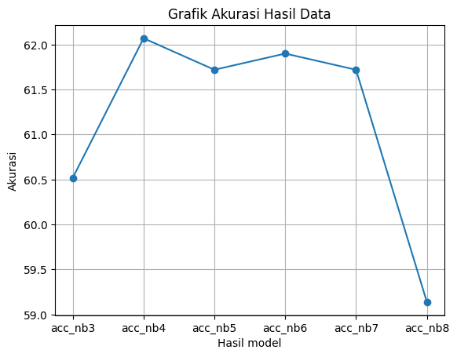
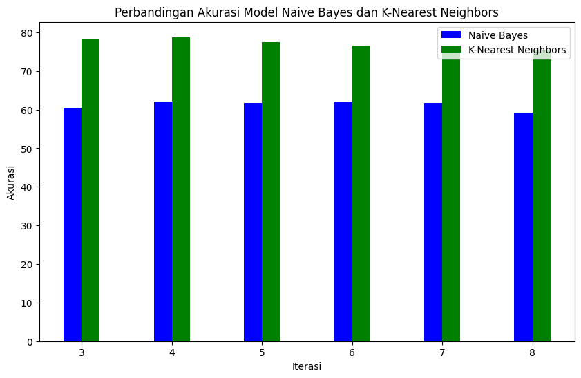

%%html
<script src="https://polyfill.io/v3/polyfill.min.js?features=es6"></script>
<script id="MathJax-script" async src="https://cdn.jsdelivr.net/npm/mathjax@3/es5/tex-mml-chtml.js"></script>
Reduksi Dimensi (LDA)#
Apa itu LDA?#
LDA merupakan sebuah model probabilitas generatif dari koleksi data diskrit seperti korpus teks.
\[P(z_d = k, w_d = i) = \frac{\gamma_k \cdot p(w_i | z_k)}{\sum_{k'=1}^K \gamma_{k'} \cdot p(w_i | z_{k'})} \]
P(zd=k,w d =i) adalah probabilitas bahwa dokumen d memiliki label topik k dan kata i muncul di dokumen tersebut
zd adalah label topik dari dokumen d
wd adalah kata-kata yang muncul dalam dokumen d
i adalah indeks dari kata wi
K adalah jumlah topik yang diasumsikan\
γk adalah probabilitas bahwa dokumen dialokasikan ke topik k
p(wi∣zk) adalah probabilitas bahwa kata w i muncul dalam topik k
Tahapan Implementasi LDA#
Import library yang diperlukan#
import numpy as np
import sklearn
from sklearn.decomposition import LatentDirichletAllocation
import pandas as pd
import os
Download/siapkan data#
import gdown
# download data
# https://drive.google.com/file/d/1NjjX22Qcrg4YPjvTm__NaZhDq4liNm6l/view?usp=drive_link
nama_data = '/content/termFreq_Data'
gdown.download(f'https://drive.google.com/uc?id=1NjjX22Qcrg4YPjvTm__NaZhDq4liNm6l', nama_data, quiet=False)
Downloading...
From: https://drive.google.com/uc?id=1NjjX22Qcrg4YPjvTm__NaZhDq4liNm6l
To: /content/termFreq_Data
0%| | 0.00/11.8M [00:00<?, ?B/s]
4%|▍ | 524k/11.8M [00:00<00:02, 5.06MB/s]
40%|███▉ | 4.72M/11.8M [00:00<00:00, 21.3MB/s]
100%|██████████| 11.8M/11.8M [00:00<00:00, 41.3MB/s]
'/content/termFreq_Data'
import gdown
# download data
# https://drive.google.com/file/d/1NjjX22Qcrg4YPjvTm__NaZhDq4liNm6l/view?usp=drive_link
nama_data = '/content/DataAsli'
gdown.download(f'https://drive.google.com/uc?id=1-IdWAIZ16LN3AqRyoKhrv3Iojggt7hDf', nama_data, quiet=False)
Downloading...
From: https://drive.google.com/uc?id=1-IdWAIZ16LN3AqRyoKhrv3Iojggt7hDf
To: /content/DataAsli
0%| | 0.00/1.25M [00:00<?, ?B/s]
42%|████▏ | 524k/1.25M [00:00<00:00, 5.21MB/s]
100%|██████████| 1.25M/1.25M [00:00<00:00, 9.54MB/s]
'/content/DataAsli'
Tampilkan data#
termFreq = pd.read_csv("/content/termFreq_Data")
termFreq
| aalysis | aam | ab | abad | abadi | abai | abdi | ability | abjad | absah | ... | zara | zat | zcz | zf | zona | zone | zoning | zoom | zucara | zungu | |
|---|---|---|---|---|---|---|---|---|---|---|---|---|---|---|---|---|---|---|---|---|---|
| 0 | 0 | 0 | 0 | 0 | 0 | 0 | 0 | 0 | 0 | 0 | ... | 0 | 0 | 0 | 0 | 0 | 0 | 0 | 0 | 0 | 0 |
| 1 | 0 | 0 | 0 | 0 | 0 | 0 | 0 | 0 | 0 | 0 | ... | 0 | 0 | 0 | 0 | 0 | 0 | 0 | 0 | 0 | 0 |
| 2 | 0 | 0 | 0 | 0 | 0 | 0 | 0 | 0 | 0 | 0 | ... | 0 | 0 | 0 | 0 | 0 | 0 | 0 | 0 | 0 | 0 |
| 3 | 0 | 0 | 0 | 0 | 0 | 0 | 0 | 0 | 0 | 0 | ... | 0 | 0 | 0 | 0 | 0 | 0 | 0 | 0 | 0 | 0 |
| 4 | 0 | 0 | 0 | 0 | 0 | 0 | 0 | 0 | 0 | 0 | ... | 0 | 0 | 0 | 0 | 0 | 0 | 0 | 0 | 0 | 0 |
| ... | ... | ... | ... | ... | ... | ... | ... | ... | ... | ... | ... | ... | ... | ... | ... | ... | ... | ... | ... | ... | ... |
| 824 | 0 | 0 | 0 | 0 | 0 | 0 | 0 | 0 | 0 | 0 | ... | 0 | 0 | 0 | 0 | 0 | 0 | 0 | 0 | 0 | 0 |
| 825 | 0 | 0 | 0 | 0 | 0 | 0 | 0 | 0 | 0 | 0 | ... | 0 | 0 | 0 | 0 | 0 | 0 | 0 | 0 | 0 | 0 |
| 826 | 0 | 0 | 0 | 0 | 0 | 0 | 0 | 0 | 0 | 0 | ... | 0 | 0 | 0 | 0 | 0 | 0 | 0 | 0 | 0 | 0 |
| 827 | 0 | 0 | 0 | 0 | 0 | 0 | 0 | 0 | 0 | 0 | ... | 0 | 0 | 0 | 0 | 0 | 0 | 0 | 0 | 0 | 0 |
| 828 | 0 | 0 | 0 | 0 | 0 | 0 | 0 | 0 | 0 | 0 | ... | 0 | 0 | 0 | 0 | 0 | 0 | 0 | 0 | 0 | 0 |
829 rows × 7085 columns
# menampilkan data asli
dataset = pd.read_csv("/content/DataAsli")
dataset
| Judul | Penulis | Dosen Pembimbing I | Dosen Pembimbing II | Abstrak | Label | |
|---|---|---|---|---|---|---|
| 0 | PERANCANGAN DAN IMPLEMENTASI SISTEM DATABASE ... | A.Ubaidillah S.Kom | Budi Setyono M.T | Hermawan S.T | Sistem informasi akademik (SIAKAD) merupaka... | RPL |
| 1 | APLIKASI KONTROL DAN MONITORING JARINGAN KOMPU... | M. Basith Ardianto, | Drs. Budi Soesilo, MT | Koko Joni, ST | Berjalannya koneksi jaringan komputer dengan l... | RPL |
| 2 | RANCANG BANGUN APLIKASI PROXY SERVER UNTUK ENK... | Akhmad Suyandi, S.Kom | Drs. Budi Soesilo, M.T | Hermawan, ST, MT | Web server adalah sebuah perangkat lunak serve... | RPL |
| 3 | SISTEM PENDUKUNG KEPUTUSAN OPTIMASI PENJADWALA... | Heri Supriyanto | Mulaab, S.Si., M.Kom | Firli Irhamni, ST., M.Kom | Penjadwalan kuliah di Perguruan Tinggi me... | KK |
| 4 | SISTEM AUGMENTED REALITY ANIMASI BENDA BERGERA... | Septian Rahman Hakim | Arik Kurniawati, S.Kom., M.T. | Haryanto, S.T., M.T. | Seiring perkembangan teknologi yang ada diduni... | KK |
| ... | ... | ... | ... | ... | ... | ... |
| 853 | PENERAPAN ALGORITMA LONG-SHORT TERM MEMORY UNT... | Rachmad Agung Pambudi | Eka Mala Sari Rochman, S.Kom., M.Kom | Sri Herawati, S.Kom., M.Kom | Investasi saham selama ini memiliki resiko ker... | KK |
| 854 | SISTEM PENCARIAN TEKS AL-QURAN TERJEMAHAN BERB... | Nadila Hidayanti | Achmad Jauhari, S.T., M.Kom | Ika Oktavia Suzanti, S.Kom., M.Cs | Information Retrieval (IR) merupakan pengambil... | KK |
| 855 | KLASIFIKASI KOMPLEKSITAS VISUAL CITRA SAMPAH M... | Afni Sakinah | Dr. Indah Agustien Siradjuddin, S.Kom., M.Kom. | Moch. Kautsar Sophan, S.Kom., M.MT. | Klasifikasi citra merupakan proses pengelompok... | KK |
| 856 | IDENTIFIKASI BINER ATRIBUT PEJALAN KAKI MENGGU... | Friska Fatmawatiningrum | Dr. Indah Agustien Siradjuddin, S.Kom., M.Kom. | Prof. Dr. Arief Muntasa, S.Si., M.MT. | Identifikasi atribut pejalan kaki merupakan sa... | KK |
| 857 | DETEKSI OBJEK MANUSIA BERBASIS ONE STAGE DETEC... | Dian Wibowo | Dr. Indah Agustien Siradjuddin, S.Kom., M.Kom. | Moch. Kautsar Sophan, S.Kom., M.MT. | Topik deteksi objek telah menarik perhatian ya... | KK |
858 rows × 6 columns
# # mengambil kolom selain kolom pertama untuk mendapatkan kata dari abstrak
# termFreq_proses = termFreq.iloc[:, 1:]
# termFreq_proses
# ambil label
datalabel = dataset['Label']
datalabel
0 RPL
1 RPL
2 RPL
3 KK
4 KK
...
853 KK
854 KK
855 KK
856 KK
857 KK
Name: Label, Length: 858, dtype: object
Proses Latent Dirichlet Allocation (LDA)#
# membuat variable k, alpha dan beta untuk proses LDA
k = 3
alpha = 0.1
beta = 0.2
lda_model = LatentDirichletAllocation(n_components=k, doc_topic_prior=alpha, topic_word_prior=beta)
# Proporsi topik pada dokumen
proporsi_topik_dokumen = lda_model.fit_transform(termFreq)
proporsi_topik_dokumen_df = pd.DataFrame(proporsi_topik_dokumen, columns=['Topik 1','Topik 2','Topik 3'])
# proporsi_topik_dokumen_df.insert(0,'stemmed_tokens', abstrak)
proporsi_topik_dokumen_df
| Topik 1 | Topik 2 | Topik 3 | |
|---|---|---|---|
| 0 | 0.275408 | 0.000666 | 0.723926 |
| 1 | 0.000490 | 0.000490 | 0.999021 |
| 2 | 0.000549 | 0.000549 | 0.998903 |
| 3 | 0.000745 | 0.000745 | 0.998510 |
| 4 | 0.000729 | 0.998543 | 0.000729 |
| ... | ... | ... | ... |
| 824 | 0.000577 | 0.100680 | 0.898742 |
| 825 | 0.000739 | 0.587846 | 0.411415 |
| 826 | 0.000392 | 0.999216 | 0.000392 |
| 827 | 0.000473 | 0.999053 | 0.000473 |
| 828 | 0.000661 | 0.489636 | 0.509703 |
829 rows × 3 columns
df_final = pd.concat([proporsi_topik_dokumen_df,datalabel],axis=1)
df_final
| Topik 1 | Topik 2 | Topik 3 | Label | |
|---|---|---|---|---|
| 0 | 0.275408 | 0.000666 | 0.723926 | RPL |
| 1 | 0.000490 | 0.000490 | 0.999021 | RPL |
| 2 | 0.000549 | 0.000549 | 0.998903 | RPL |
| 3 | 0.000745 | 0.000745 | 0.998510 | KK |
| 4 | 0.000729 | 0.998543 | 0.000729 | KK |
| ... | ... | ... | ... | ... |
| 853 | NaN | NaN | NaN | KK |
| 854 | NaN | NaN | NaN | KK |
| 855 | NaN | NaN | NaN | KK |
| 856 | NaN | NaN | NaN | KK |
| 857 | NaN | NaN | NaN | KK |
858 rows × 4 columns
df_final.isna()
df_final.dropna(subset=['Topik 1', 'Topik 2', 'Topik 3'],inplace = True)
# Cek kembali nilai NaN
df_final
| Topik 1 | Topik 2 | Topik 3 | Label | |
|---|---|---|---|---|
| 0 | 0.275408 | 0.000666 | 0.723926 | RPL |
| 1 | 0.000490 | 0.000490 | 0.999021 | RPL |
| 2 | 0.000549 | 0.000549 | 0.998903 | RPL |
| 3 | 0.000745 | 0.000745 | 0.998510 | KK |
| 4 | 0.000729 | 0.998543 | 0.000729 | KK |
| ... | ... | ... | ... | ... |
| 824 | 0.000577 | 0.100680 | 0.898742 | KK |
| 825 | 0.000739 | 0.587846 | 0.411415 | KK |
| 826 | 0.000392 | 0.999216 | 0.000392 | KK |
| 827 | 0.000473 | 0.999053 | 0.000473 | KK |
| 828 | 0.000661 | 0.489636 | 0.509703 | RPL |
829 rows × 4 columns
# Proporsi kata pada topik
fitur = termFreq.columns.tolist()
ProporsiKataTopik = lda_model.components_
ProporsiKataTopik_df = pd.DataFrame(ProporsiKataTopik, columns = fitur)
ProporsiKataTopik_df.insert(0,'Topik',['Topik 1', 'Topik 2', 'Topik 3'])
ProporsiKataTopik_df
| Topik | aalysis | aam | ab | abad | abadi | abai | abdi | ability | abjad | ... | zara | zat | zcz | zf | zona | zone | zoning | zoom | zucara | zungu | |
|---|---|---|---|---|---|---|---|---|---|---|---|---|---|---|---|---|---|---|---|---|---|
| 0 | Topik 1 | 0.2 | 0.225235 | 0.2 | 0.321368 | 0.209189 | 0.20215 | 2.118126 | 0.2 | 0.2 | ... | 0.20000 | 0.2 | 0.200000 | 16.2 | 8.2 | 0.200000 | 0.200000 | 0.200000 | 0.2 | 0.2 |
| 1 | Topik 2 | 0.2 | 2.174765 | 0.2 | 2.075002 | 0.200000 | 0.20000 | 0.200000 | 0.2 | 3.2 | ... | 2.16873 | 1.2 | 0.208445 | 0.2 | 0.2 | 0.206698 | 0.206503 | 3.198614 | 0.2 | 0.2 |
| 2 | Topik 3 | 1.2 | 0.200000 | 1.2 | 0.203630 | 2.190811 | 1.19785 | 1.281874 | 1.2 | 0.2 | ... | 0.23127 | 0.2 | 1.191555 | 0.2 | 0.2 | 3.193302 | 4.193497 | 0.201386 | 1.2 | 1.2 |
3 rows × 7086 columns
#Metrics
from sklearn.metrics import make_scorer, accuracy_score,precision_score
from sklearn.metrics import classification_report
from sklearn.metrics import confusion_matrix
from sklearn.metrics import accuracy_score ,precision_score,recall_score,f1_score
from sklearn.model_selection import KFold,train_test_split,cross_val_score
from sklearn.naive_bayes import GaussianNB
#Train and Test split
X = df_final.iloc[:,:3]
y = df_final['Label']
X_train,X_test,y_train,y_test= train_test_split(X,y,test_size=0.3,random_state=0)
X
| Topik 1 | Topik 2 | Topik 3 | |
|---|---|---|---|
| 0 | 0.275408 | 0.000666 | 0.723926 |
| 1 | 0.000490 | 0.000490 | 0.999021 |
| 2 | 0.000549 | 0.000549 | 0.998903 |
| 3 | 0.000745 | 0.000745 | 0.998510 |
| 4 | 0.000729 | 0.998543 | 0.000729 |
| ... | ... | ... | ... |
| 824 | 0.000577 | 0.100680 | 0.898742 |
| 825 | 0.000739 | 0.587846 | 0.411415 |
| 826 | 0.000392 | 0.999216 | 0.000392 |
| 827 | 0.000473 | 0.999053 | 0.000473 |
| 828 | 0.000661 | 0.489636 | 0.509703 |
829 rows × 3 columns
nbT3 = GaussianNB()
nbT3.fit(X_train, y_train)
Y_prediction = nbT3.predict(X_test)
accuracy_rf=round(accuracy_score(y_test,Y_prediction)* 100, 2)
acc_nb3 = round(nbT3.score(X_train, y_train) * 100, 2)
acc_nb3
61.38
4 topik
# 4 topik
# membuat variable k, alpha dan beta untuk proses LDA
k = 4
alpha = 0.1
beta = 0.2
lda_model = LatentDirichletAllocation(n_components=k, doc_topic_prior=alpha, topic_word_prior=beta)
# Proporsi topik pada dokumen
proporsi_topik_dokumen = lda_model.fit_transform(termFreq)
proporsi_topik_dokumen_df = pd.DataFrame(proporsi_topik_dokumen, columns=['Topik 1', 'Topik 2', 'Topik 3','Topik 4'])
# proporsi_topik_dokumen_df.insert(0,'stemmed_tokens', abstrak)
proporsi_topik_dokumen_df
df_final = pd.concat([proporsi_topik_dokumen_df,datalabel],axis=1)
df_final
df_final.isna()
df_final.dropna(subset=['Topik 1', 'Topik 2', 'Topik 3','Topik 4'],inplace = True)
# Cek kembali nilai NaN
df_final
#Train and Test split
X = df_final.iloc[:,:4]
y = df_final['Label']
X_train,X_test,y_train,y_test= train_test_split(X,y,test_size=0.3,random_state=0)
X
nbT4 = GaussianNB()
nbT4.fit(X_train, y_train)
Y_prediction = nbT4.predict(X_test)
accuracy_rf=round(accuracy_score(y_test,Y_prediction)* 100, 2)
acc_nb4 = round(nbT4.score(X_train, y_train) * 100, 2)
print(acc_nb4 )
accuracy_rf
58.79
55.82
# 6 topik
# membuat variable k, alpha dan beta untuk proses LDA
k = 6
alpha = 0.1
beta = 0.2
lda_model = LatentDirichletAllocation(n_components=k, doc_topic_prior=alpha, topic_word_prior=beta)
# Proporsi topik pada dokumen
proporsi_topik_dokumen = lda_model.fit_transform(termFreq)
proporsi_topik_dokumen_df = pd.DataFrame(proporsi_topik_dokumen, columns=['Topik 1', 'Topik 2', 'Topik 3','Topik 4','Topik 5','Topik 6'])
# proporsi_topik_dokumen_df.insert(0,'stemmed_tokens', abstrak)
proporsi_topik_dokumen_df
df_final = pd.concat([proporsi_topik_dokumen_df,datalabel],axis=1)
df_final
df_final.isna()
df_final.dropna(subset=['Topik 1', 'Topik 2', 'Topik 3','Topik 4','Topik 5','Topik 6'],inplace = True)
# Cek kembali nilai NaN
df_final
#Train and Test split
X = df_final.iloc[:,:6]
y = df_final['Label']
X_train,X_test,y_train,y_test= train_test_split(X,y,test_size=0.3,random_state=0)
print(X)
nbT6 = GaussianNB()
nbT6.fit(X_train, y_train)
Y_prediction = nbT6.predict(X_test)
accuracy_rf=round(accuracy_score(y_test,Y_prediction)* 100, 2)
acc_nb = round(nbT6.score(X_train, y_train) * 100, 2)
acc_nb
Topik 1 Topik 2 Topik 3 Topik 4 Topik 5 Topik 6
0 0.137988 0.000664 0.000664 0.000664 0.859355 0.000664
1 0.000489 0.000489 0.000489 0.997556 0.000489 0.000489
2 0.083575 0.150243 0.279510 0.000548 0.485577 0.000548
3 0.000743 0.000743 0.000743 0.000743 0.996284 0.000743
4 0.420171 0.000727 0.000727 0.576921 0.000727 0.000727
.. ... ... ... ... ... ...
824 0.133797 0.000576 0.832008 0.032466 0.000576 0.000576
825 0.996312 0.000738 0.000738 0.000738 0.000738 0.000738
826 0.998043 0.000391 0.000391 0.000391 0.000391 0.000391
827 0.997636 0.000473 0.000473 0.000473 0.000473 0.000473
828 0.767830 0.000660 0.000660 0.180850 0.049341 0.000660
[829 rows x 6 columns]
59.83
nbT7 = GaussianNB()
nbT7.fit(X_train, y_train)
Y_prediction = nbT7.predict(X_test)
accuracy_rf=round(accuracy_score(y_test,Y_prediction)* 100, 2)
acc_nb = round(nbT7.score(X_train, y_train) * 100, 2)
acc_nb
59.83
# TFIDf
import gdown
# download data
# https://drive.google.com/file/d/1BdWsXHxyJ7hP054ZKM0Cv3if3BE222MT/view?usp=sharing
nama_data = '/content/tfidf_Data'
gdown.download(f'https://drive.google.com/uc?id=1BdWsXHxyJ7hP054ZKM0Cv3if3BE222MT', nama_data, quiet=False)
Downloading...
From: https://drive.google.com/uc?id=1BdWsXHxyJ7hP054ZKM0Cv3if3BE222MT
To: /content/tfidf_Data
0%| | 0.00/24.8M [00:00<?, ?B/s]
2%|▏ | 524k/24.8M [00:00<00:04, 5.18MB/s]
19%|█▉ | 4.72M/24.8M [00:00<00:00, 21.5MB/s]
49%|████▊ | 12.1M/24.8M [00:00<00:00, 26.9MB/s]
70%|██████▉ | 17.3M/24.8M [00:00<00:00, 24.3MB/s]
100%|██████████| 24.8M/24.8M [00:00<00:00, 32.1MB/s]
'/content/tfidf_Data'
tfidf = pd.read_csv("/content/tfidf_Data")
tfidf
| aalysis | aam | ab | abad | abadi | abai | abdi | ability | abjad | absah | ... | zara | zat | zcz | zf | zona | zone | zoning | zoom | zucara | zungu | |
|---|---|---|---|---|---|---|---|---|---|---|---|---|---|---|---|---|---|---|---|---|---|
| 0 | 0.0 | 0.0 | 0.0 | 0.0 | 0.0 | 0.0 | 0.0 | 0.0 | 0.0 | 0.0 | ... | 0.0 | 0.0 | 0.0 | 0.0 | 0.0 | 0.0 | 0.0 | 0.0 | 0.0 | 0.0 |
| 1 | 0.0 | 0.0 | 0.0 | 0.0 | 0.0 | 0.0 | 0.0 | 0.0 | 0.0 | 0.0 | ... | 0.0 | 0.0 | 0.0 | 0.0 | 0.0 | 0.0 | 0.0 | 0.0 | 0.0 | 0.0 |
| 2 | 0.0 | 0.0 | 0.0 | 0.0 | 0.0 | 0.0 | 0.0 | 0.0 | 0.0 | 0.0 | ... | 0.0 | 0.0 | 0.0 | 0.0 | 0.0 | 0.0 | 0.0 | 0.0 | 0.0 | 0.0 |
| 3 | 0.0 | 0.0 | 0.0 | 0.0 | 0.0 | 0.0 | 0.0 | 0.0 | 0.0 | 0.0 | ... | 0.0 | 0.0 | 0.0 | 0.0 | 0.0 | 0.0 | 0.0 | 0.0 | 0.0 | 0.0 |
| 4 | 0.0 | 0.0 | 0.0 | 0.0 | 0.0 | 0.0 | 0.0 | 0.0 | 0.0 | 0.0 | ... | 0.0 | 0.0 | 0.0 | 0.0 | 0.0 | 0.0 | 0.0 | 0.0 | 0.0 | 0.0 |
| ... | ... | ... | ... | ... | ... | ... | ... | ... | ... | ... | ... | ... | ... | ... | ... | ... | ... | ... | ... | ... | ... |
| 824 | 0.0 | 0.0 | 0.0 | 0.0 | 0.0 | 0.0 | 0.0 | 0.0 | 0.0 | 0.0 | ... | 0.0 | 0.0 | 0.0 | 0.0 | 0.0 | 0.0 | 0.0 | 0.0 | 0.0 | 0.0 |
| 825 | 0.0 | 0.0 | 0.0 | 0.0 | 0.0 | 0.0 | 0.0 | 0.0 | 0.0 | 0.0 | ... | 0.0 | 0.0 | 0.0 | 0.0 | 0.0 | 0.0 | 0.0 | 0.0 | 0.0 | 0.0 |
| 826 | 0.0 | 0.0 | 0.0 | 0.0 | 0.0 | 0.0 | 0.0 | 0.0 | 0.0 | 0.0 | ... | 0.0 | 0.0 | 0.0 | 0.0 | 0.0 | 0.0 | 0.0 | 0.0 | 0.0 | 0.0 |
| 827 | 0.0 | 0.0 | 0.0 | 0.0 | 0.0 | 0.0 | 0.0 | 0.0 | 0.0 | 0.0 | ... | 0.0 | 0.0 | 0.0 | 0.0 | 0.0 | 0.0 | 0.0 | 0.0 | 0.0 | 0.0 |
| 828 | 0.0 | 0.0 | 0.0 | 0.0 | 0.0 | 0.0 | 0.0 | 0.0 | 0.0 | 0.0 | ... | 0.0 | 0.0 | 0.0 | 0.0 | 0.0 | 0.0 | 0.0 | 0.0 | 0.0 | 0.0 |
829 rows × 7085 columns
# ===================== tfidf 3 topik =================
# 3 topik
# membuat variable k, alpha dan beta untuk proses LDA
k = 3
alpha = 0.1
beta = 0.2
lda_model = LatentDirichletAllocation(n_components=k, doc_topic_prior=alpha, topic_word_prior=beta)
# Proporsi topik pada dokumen
proporsi_topik_dokumen = lda_model.fit_transform(tfidf)
proporsi_topik_dokumen_df = pd.DataFrame(proporsi_topik_dokumen, columns=['Topik 1', 'Topik 2', 'Topik 3'])
# proporsi_topik_dokumen_df.insert(0,'stemmed_tokens', abstrak)
proporsi_topik_dokumen_df
df_final = pd.concat([proporsi_topik_dokumen_df,datalabel],axis=1)
df_final
df_final.isna()
df_final.dropna(subset=['Topik 1', 'Topik 2', 'Topik 3'],inplace = True)
# Cek kembali nilai NaN
df_final
# # Proporsi kata pada topik
# fitur = tfidf.columns.tolist()
# ProporsiKataTopik = lda_model.components_
# ProporsiKataTopik_df = pd.DataFrame(ProporsiKataTopik, columns = fitur)
# ProporsiKataTopik_df.insert(0,'Topik',['Topik 1', 'Topik 2', 'Topik 3'])
# ProporsiKataTopik_df
#Train and Test split
X = df_final.iloc[:,:3]
y = df_final['Label']
X_train,X_test,y_train,y_test= train_test_split(X,y,test_size=0.3)
print(X)
tfidf_nbT4 = GaussianNB()
tfidf_nbT4.fit(X_train, y_train)
Y_prediction = tfidf_nbT4.predict(X_test)
accuracy_rf=round(accuracy_score(y_test,Y_prediction)* 100, 2)
acc_nb3 = round(tfidf_nbT4.score(X_train, y_train) * 100, 2)
# KNN
from sklearn.neighbors import KNeighborsClassifier
knn3 = KNeighborsClassifier(n_neighbors = 3)
knn3.fit(X_train, y_train)
Y_pred = knn3.predict(X_test)
accuracy_knn=round(accuracy_score(y_test,Y_pred)* 100, 2)
acc_knn3 = round(knn3.score(X_train, y_train) * 100, 2)
print(f'''
tfidf menggunakan 3 topik dan Nb akurasi = {acc_nb3}
tfidf menggunakan 3 topik dan KNN akurasi = {acc_knn3}
''')
Topik 1 Topik 2 Topik 3
0 0.012571 0.012571 0.974858
1 0.015636 0.015636 0.968728
2 0.015731 0.015731 0.968538
3 0.017966 0.017966 0.964067
4 0.014555 0.014555 0.970890
.. ... ... ...
824 0.296589 0.012375 0.691036
825 0.013019 0.013019 0.973963
826 0.011748 0.011748 0.976504
827 0.014590 0.014590 0.970820
828 0.011841 0.011841 0.976319
[829 rows x 3 columns]
tfidf menggunakan 3 topik dan Nb akurasi = 60.52
tfidf menggunakan 3 topik dan KNN akurasi = 78.45
df_final.isna().sum()
Topik 1 0
Topik 2 0
Topik 3 0
Label 0
dtype: int64
# ===================== tfidf 4 topik =================
# membuat variable k, alpha dan beta untuk proses LDA
k = 4
alpha = 0.1
beta = 0.2
lda_model = LatentDirichletAllocation(n_components=k, doc_topic_prior=alpha, topic_word_prior=beta)
# Proporsi topik pada dokumen
proporsi_topik_dokumen = lda_model.fit_transform(tfidf)
proporsi_topik_dokumen_df = pd.DataFrame(proporsi_topik_dokumen, columns=['Topik 1', 'Topik 2', 'Topik 3', 'Topik 4'])
# proporsi_topik_dokumen_df.insert(0,'stemmed_tokens', abstrak)
proporsi_topik_dokumen_df
df_final = pd.concat([proporsi_topik_dokumen_df,datalabel],axis=1)
df_final
df_final.isna()
df_final.dropna(subset=['Topik 1', 'Topik 2', 'Topik 3', 'Topik 4'],inplace = True)
# Cek kembali nilai NaN
df_final
# # Proporsi kata pada topik
# fitur = tfidf.columns.tolist()
# ProporsiKataTopik = lda_model.components_
# ProporsiKataTopik_df = pd.DataFrame(ProporsiKataTopik, columns = fitur)
# ProporsiKataTopik_df.insert(0,'Topik',['Topik 1', 'Topik 2', 'Topik 3'])
# ProporsiKataTopik_df
#Train and Test split
X = df_final.iloc[:,:4]
y = df_final['Label']
X_train,X_test,y_train,y_test= train_test_split(X,y,test_size=0.3)
print(X)
tfidf_nbT4 = GaussianNB()
tfidf_nbT4.fit(X_train, y_train)
Y_prediction = tfidf_nbT4.predict(X_test)
accuracy_rf=round(accuracy_score(y_test,Y_prediction)* 100, 2)
acc_nb4 = round(tfidf_nbT4.score(X_train, y_train) * 100, 2)
# KNN
from sklearn.neighbors import KNeighborsClassifier
knn4 = KNeighborsClassifier(n_neighbors = 3)
knn4.fit(X_train, y_train)
Y_pred = knn4.predict(X_test)
accuracy_knn4=round(accuracy_score(y_test,Y_pred)* 100, 2)
acc_knn4 = round(knn4.score(X_train, y_train) * 100, 2)
print(f'''
TFIDF menggunakan 4 topik dan Nb akurasi = {acc_nb4}
TFIDF menggunakan 4 topik dan KNN akurasi = {acc_knn4}
''')
Topik 1 Topik 2 Topik 3 Topik 4
0 0.012415 0.962755 0.012415 0.012415
1 0.015395 0.953814 0.015395 0.015396
2 0.015487 0.953538 0.015487 0.015487
3 0.017649 0.947052 0.017649 0.017649
4 0.014346 0.956961 0.014346 0.014346
.. ... ... ... ...
824 0.012224 0.676386 0.012224 0.299167
825 0.012852 0.961432 0.012864 0.012852
826 0.011612 0.965165 0.011612 0.011612
827 0.014380 0.956860 0.014380 0.014380
828 0.011702 0.964894 0.011702 0.011702
[829 rows x 4 columns]
TFIDF menggunakan 4 topik dan Nb akurasi = 62.07
TFIDF menggunakan 4 topik dan KNN akurasi = 78.79
# ===================== tfidf 5 topik =================
# membuat variable k, alpha dan beta untuk proses LDA
k = 5
alpha = 0.1
beta = 0.2
lda_model = LatentDirichletAllocation(n_components=k, doc_topic_prior=alpha, topic_word_prior=beta)
# Proporsi topik pada dokumen
proporsi_topik_dokumen = lda_model.fit_transform(tfidf)
proporsi_topik_dokumen_df = pd.DataFrame(proporsi_topik_dokumen, columns=['Topik 1', 'Topik 2', 'Topik 3', 'Topik 4', 'Topik 5'])
# proporsi_topik_dokumen_df.insert(0,'stemmed_tokens', abstrak)
proporsi_topik_dokumen_df
df_final = pd.concat([proporsi_topik_dokumen_df,datalabel],axis=1)
df_final
df_final.isna()
df_final.dropna(subset=['Topik 1', 'Topik 2', 'Topik 3', 'Topik 4', 'Topik 5'],inplace = True)
# Cek kembali nilai NaN
df_final
# # Proporsi kata pada topik
# fitur = tfidf.columns.tolist()
# ProporsiKataTopik = lda_model.components_
# ProporsiKataTopik_df = pd.DataFrame(ProporsiKataTopik, columns = fitur)
# ProporsiKataTopik_df.insert(0,'Topik',['Topik 1', 'Topik 2', 'Topik 3'])
# ProporsiKataTopik_df
#Train and Test split
X = df_final.iloc[:,:5]
y = df_final['Label']
X_train,X_test,y_train,y_test= train_test_split(X,y,test_size=0.3)
print(X)
tfidf_nbT5 = GaussianNB()
tfidf_nbT5.fit(X_train, y_train)
Y_prediction = tfidf_nbT5.predict(X_test)
accuracy_rf=round(accuracy_score(y_test,Y_prediction)* 100, 2)
acc_nb5 = round(tfidf_nbT5.score(X_train, y_train) * 100, 2)
# KNN
from sklearn.neighbors import KNeighborsClassifier
knn5 = KNeighborsClassifier(n_neighbors = 3)
knn5.fit(X_train, y_train)
Y_pred = knn5.predict(X_test)
accuracy_knn5=round(accuracy_score(y_test,Y_pred)* 100, 2)
acc_knn5 = round(knn5.score(X_train, y_train) * 100, 2)
print(f'''
TFIDF menggunakan 5 topik dan Nb akurasi = {acc_nb4}
TFIDF menggunakan 5 topik dan KNN akurasi = {acc_knn5}
''')
Topik 1 Topik 2 Topik 3 Topik 4 Topik 5
0 0.012263 0.012263 0.012263 0.012263 0.950949
1 0.015162 0.015162 0.015162 0.015162 0.939352
2 0.015251 0.015251 0.015251 0.015251 0.938996
3 0.017343 0.017343 0.017343 0.017343 0.930627
4 0.014144 0.014144 0.014144 0.014144 0.943426
.. ... ... ... ... ...
824 0.012076 0.012076 0.012076 0.012076 0.951695
825 0.012688 0.012688 0.012688 0.012688 0.949247
826 0.011478 0.011478 0.011478 0.011478 0.954087
827 0.014176 0.014176 0.014176 0.014176 0.943295
828 0.011567 0.011567 0.011567 0.011567 0.953734
[829 rows x 5 columns]
TFIDF menggunakan 5 topik dan Nb akurasi = 62.07
TFIDF menggunakan 5 topik dan KNN akurasi = 77.41
# ===================== tfidf 6 topik =================
# membuat variable k, alpha dan beta untuk proses LDA
k = 6
alpha = 0.1
beta = 0.2
lda_model = LatentDirichletAllocation(n_components=k, doc_topic_prior=alpha, topic_word_prior=beta)
# Proporsi topik pada dokumen
proporsi_topik_dokumen = lda_model.fit_transform(tfidf)
proporsi_topik_dokumen_df = pd.DataFrame(proporsi_topik_dokumen, columns=['Topik 1', 'Topik 2', 'Topik 3', 'Topik 4', 'Topik 5', 'Topik 6'])
# proporsi_topik_dokumen_df.insert(0,'stemmed_tokens', abstrak)
proporsi_topik_dokumen_df
df_final = pd.concat([proporsi_topik_dokumen_df,datalabel],axis=1)
df_final
df_final.isna()
df_final.dropna(subset=['Topik 1', 'Topik 2', 'Topik 3', 'Topik 4', 'Topik 5', 'Topik 6'],inplace = True)
# Cek kembali nilai NaN
df_final
# # Proporsi kata pada topik
# fitur = tfidf.columns.tolist()
# ProporsiKataTopik = lda_model.components_
# ProporsiKataTopik_df = pd.DataFrame(ProporsiKataTopik, columns = fitur)
# ProporsiKataTopik_df.insert(0,'Topik',['Topik 1', 'Topik 2', 'Topik 3'])
# ProporsiKataTopik_df
#Train and Test split
X = df_final.iloc[:,:6]
y = df_final['Label']
X_train,X_test,y_train,y_test= train_test_split(X,y,test_size=0.3)
print(X)
tfidf_nbT6 = GaussianNB()
tfidf_nbT6.fit(X_train, y_train)
Y_prediction = tfidf_nbT6.predict(X_test)
accuracy_rf=round(accuracy_score(y_test,Y_prediction)* 100, 2)
acc_nb6 = round(tfidf_nbT6.score(X_train, y_train) * 100, 2)
# KNN
from sklearn.neighbors import KNeighborsClassifier
knn6 = KNeighborsClassifier(n_neighbors = 3)
knn6.fit(X_train, y_train)
Y_pred = knn6.predict(X_test)
accuracy_knn6=round(accuracy_score(y_test,Y_pred)* 100, 2)
acc_knn6 = round(knn6.score(X_train, y_train) * 100, 2)
print(f'''
TFIDF menggunakan 6 topik dan Nb akurasi = {acc_nb6}
TFIDF menggunakan 6 topik dan KNN akurasi = {acc_knn6}
''')
Topik 1 Topik 2 Topik 3 Topik 4 Topik 5 Topik 6
0 0.012114 0.012114 0.012114 0.939426 0.012114 0.012117
1 0.014936 0.014936 0.014936 0.925316 0.014936 0.014941
2 0.015022 0.015022 0.015022 0.924890 0.015022 0.015023
3 0.017047 0.017047 0.017047 0.914760 0.017047 0.017050
4 0.013946 0.013946 0.013946 0.930267 0.013946 0.013949
.. ... ... ... ... ... ...
824 0.011932 0.011932 0.011932 0.940326 0.011932 0.011946
825 0.012529 0.012529 0.012529 0.833910 0.012529 0.115973
826 0.011348 0.011348 0.011348 0.011351 0.011348 0.943257
827 0.013978 0.013978 0.013978 0.013984 0.013978 0.930104
828 0.011434 0.011434 0.011434 0.614200 0.011434 0.340062
[829 rows x 6 columns]
TFIDF menggunakan 6 topik dan Nb akurasi = 61.9
TFIDF menggunakan 6 topik dan KNN akurasi = 76.55
# ===================== tfidf 7 topik =================
# membuat variable k, alpha dan beta untuk proses LDA
k = 7
alpha = 0.1
beta = 0.2
lda_model = LatentDirichletAllocation(n_components=k, doc_topic_prior=alpha, topic_word_prior=beta)
# Proporsi topik pada dokumen
proporsi_topik_dokumen = lda_model.fit_transform(tfidf)
proporsi_topik_dokumen_df = pd.DataFrame(proporsi_topik_dokumen, columns=['Topik 1', 'Topik 2', 'Topik 3', 'Topik 4', 'Topik 5', 'Topik 6','Topik 7'])
# proporsi_topik_dokumen_df.insert(0,'stemmed_tokens', abstrak)
proporsi_topik_dokumen_df
df_final = pd.concat([proporsi_topik_dokumen_df,datalabel],axis=1)
df_final
df_final.isna()
df_final.dropna(subset=['Topik 1', 'Topik 2', 'Topik 3', 'Topik 4', 'Topik 5', 'Topik 6','Topik 7'],inplace = True)
# Cek kembali nilai NaN
df_final
# # Proporsi kata pada topik
# fitur = tfidf.columns.tolist()
# ProporsiKataTopik = lda_model.components_
# ProporsiKataTopik_df = pd.DataFrame(ProporsiKataTopik, columns = fitur)
# ProporsiKataTopik_df.insert(0,'Topik',['Topik 1', 'Topik 2', 'Topik 3'])
# ProporsiKataTopik_df
#Train and Test split
X = df_final.iloc[:,:7]
y = df_final['Label']
X_train,X_test,y_train,y_test= train_test_split(X,y,test_size=0.3)
print(X)
tfidf_nbT7 = GaussianNB()
tfidf_nbT7.fit(X_train, y_train)
Y_prediction = tfidf_nbT7.predict(X_test)
accuracy_rf=round(accuracy_score(y_test,Y_prediction)* 100, 2)
acc_nb7 = round(tfidf_nbT7.score(X_train, y_train) * 100, 2)
# KNN
from sklearn.neighbors import KNeighborsClassifier
knn7 = KNeighborsClassifier(n_neighbors = 3)
knn7.fit(X_train, y_train)
Y_pred = knn7.predict(X_test)
accuracy_knn7=round(accuracy_score(y_test,Y_pred)* 100, 2)
acc_knn7 = round(knn7.score(X_train, y_train) * 100, 2)
print(f'''
TFIDF menggunakan 7 topik dan Nb akurasi = {acc_nb7}
TFIDF menggunakan 7 topik dan KNN akurasi = {acc_knn7}
''')
Topik 1 Topik 2 Topik 3 Topik 4 Topik 5 Topik 6 Topik 7
0 0.011969 0.011969 0.011970 0.011976 0.011969 0.011969 0.928177
1 0.014716 0.014716 0.014716 0.014716 0.014716 0.014716 0.911706
2 0.014800 0.014800 0.014800 0.014800 0.014800 0.014800 0.911202
3 0.016762 0.016762 0.016762 0.016762 0.016762 0.016762 0.899429
4 0.013754 0.013754 0.013754 0.013755 0.013754 0.013754 0.917473
.. ... ... ... ... ... ... ...
824 0.011791 0.011791 0.011791 0.011792 0.011791 0.011791 0.929251
825 0.012374 0.012374 0.012374 0.012375 0.012374 0.012374 0.925755
826 0.011221 0.011221 0.011221 0.326791 0.011221 0.011221 0.617105
827 0.013785 0.013785 0.013785 0.516818 0.013785 0.013785 0.414256
828 0.011305 0.011305 0.011305 0.283502 0.011305 0.011305 0.659973
[829 rows x 7 columns]
TFIDF menggunakan 7 topik dan Nb akurasi = 61.72
TFIDF menggunakan 7 topik dan KNN akurasi = 75.34
# ===================== tfidf 8 topik =================
# membuat variable k, alpha dan beta untuk proses LDA
k = 8
alpha = 0.1
beta = 0.2
lda_model = LatentDirichletAllocation(n_components=k, doc_topic_prior=alpha, topic_word_prior=beta)
# Proporsi topik pada dokumen
proporsi_topik_dokumen = lda_model.fit_transform(tfidf)
proporsi_topik_dokumen_df = pd.DataFrame(proporsi_topik_dokumen, columns=['Topik 1', 'Topik 2', 'Topik 3', 'Topik 4', 'Topik 5', 'Topik 6','Topik 7','Topik 8'])
# proporsi_topik_dokumen_df.insert(0,'stemmed_tokens', abstrak)
proporsi_topik_dokumen_df
df_final = pd.concat([proporsi_topik_dokumen_df,datalabel],axis=1)
df_final
df_final.isna()
df_final.dropna(subset=['Topik 1', 'Topik 2', 'Topik 3', 'Topik 4', 'Topik 5', 'Topik 6','Topik 7','Topik 8'],inplace = True)
# Cek kembali nilai NaN
df_final
# # Proporsi kata pada topik
# fitur = tfidf.columns.tolist()
# ProporsiKataTopik = lda_model.components_
# ProporsiKataTopik_df = pd.DataFrame(ProporsiKataTopik, columns = fitur)
# ProporsiKataTopik_df.insert(0,'Topik',['Topik 1', 'Topik 2', 'Topik 3'])
# ProporsiKataTopik_df
#Train and Test split
X = df_final.iloc[:,:8]
y = df_final['Label']
X_train,X_test,y_train,y_test= train_test_split(X,y,test_size=0.3)
print(X)
tfidf_nbT8 = GaussianNB()
tfidf_nbT8.fit(X_train, y_train)
Y_prediction = tfidf_nbT8.predict(X_test)
accuracy_rf=round(accuracy_score(y_test,Y_prediction)* 100, 2)
acc_nb8 = round(tfidf_nbT8.score(X_train, y_train) * 100, 2)
# KNN
from sklearn.neighbors import KNeighborsClassifier
knn8 = KNeighborsClassifier(n_neighbors = 3)
knn8.fit(X_train, y_train)
Y_pred = knn8.predict(X_test)
accuracy_knn8=round(accuracy_score(y_test,Y_pred)* 100, 2)
acc_knn8 = round(knn8.score(X_train, y_train) * 100, 2)
print(f'''
TFIDF menggunakan 8 topik dan Nb akurasi = {acc_nb8}
TFIDF menggunakan 8 topik dan KNN akurasi = {acc_knn8}
''')
Topik 1 Topik 2 Topik 3 Topik 4 Topik 5 Topik 6 Topik 7 \
0 0.917206 0.011828 0.011828 0.011828 0.011828 0.011828 0.011828
1 0.898483 0.014503 0.014502 0.014502 0.014502 0.014502 0.014502
2 0.897913 0.014584 0.014584 0.014584 0.014584 0.014584 0.014584
3 0.884602 0.016486 0.016485 0.016485 0.016485 0.016485 0.016486
4 0.650648 0.013568 0.013568 0.013568 0.013568 0.013568 0.267945
.. ... ... ... ... ... ... ...
824 0.493810 0.011654 0.011654 0.011654 0.011654 0.011654 0.436268
825 0.914439 0.012223 0.012223 0.012223 0.012223 0.012223 0.012223
826 0.922300 0.011119 0.011097 0.011097 0.011097 0.011097 0.011097
827 0.904814 0.013598 0.013598 0.013598 0.013598 0.013598 0.013598
828 0.921747 0.011179 0.011179 0.011179 0.011179 0.011179 0.011180
Topik 8
0 0.011828
1 0.014502
2 0.014584
3 0.016485
4 0.013568
.. ...
824 0.011654
825 0.012223
826 0.011097
827 0.013598
828 0.011179
[829 rows x 8 columns]
TFIDF menggunakan 8 topik dan Nb akurasi = 61.9
TFIDF menggunakan 8 topik dan KNN akurasi = 75.52
# ===================== tfidf 8 topik =================
# membuat variable k, alpha dan beta untuk proses LDA
k = 8
alpha = 0.1
beta = 0.2
lda_model = LatentDirichletAllocation(n_components=k, doc_topic_prior=alpha, topic_word_prior=beta)
# Proporsi topik pada dokumen
proporsi_topik_dokumen = lda_model.fit_transform(tfidf)
proporsi_topik_dokumen_df = pd.DataFrame(proporsi_topik_dokumen, columns=['Topik 1', 'Topik 2', 'Topik 3', 'Topik 4', 'Topik 5', 'Topik 6','Topik 7','Topik 8'])
# proporsi_topik_dokumen_df.insert(0,'stemmed_tokens', abstrak)
proporsi_topik_dokumen_df
df_final = pd.concat([proporsi_topik_dokumen_df,datalabel],axis=1)
df_final
df_final.isna()
df_final.dropna(subset=['Topik 1', 'Topik 2', 'Topik 3', 'Topik 4', 'Topik 5', 'Topik 6','Topik 7','Topik 8'],inplace = True)
# Cek kembali nilai NaN
df_final
# # Proporsi kata pada topik
# fitur = tfidf.columns.tolist()
# ProporsiKataTopik = lda_model.components_
# ProporsiKataTopik_df = pd.DataFrame(ProporsiKataTopik, columns = fitur)
# ProporsiKataTopik_df.insert(0,'Topik',['Topik 1', 'Topik 2', 'Topik 3'])
# ProporsiKataTopik_df
#Train and Test split
X = df_final.iloc[:,:8]
y = df_final['Label']
X_train,X_test,y_train,y_test= train_test_split(X,y,test_size=0.3)
print(X)
tfidf_nbT8 = GaussianNB()
tfidf_nbT8.fit(X_train, y_train)
Y_prediction = tfidf_nbT8.predict(X_test)
accuracy_rf=round(accuracy_score(y_test,Y_prediction)* 100, 2)
acc_nb8 = round(tfidf_nbT8.score(X_train, y_train) * 100, 2)
print(f'''
TFIDF menggunakan 6 topik dan Nb akurasi = {acc_nb8}
''')
Topik 1 Topik 2 Topik 3 Topik 4 Topik 5 Topik 6 Topik 7 \
0 0.011828 0.917206 0.011828 0.011828 0.011828 0.011828 0.011828
1 0.014502 0.898484 0.014502 0.014502 0.014502 0.014502 0.014502
2 0.014584 0.897913 0.014584 0.014584 0.014584 0.014584 0.014584
3 0.016485 0.884602 0.016485 0.016485 0.016485 0.016485 0.016485
4 0.013568 0.905025 0.013568 0.013568 0.013568 0.013568 0.013568
.. ... ... ... ... ... ... ...
824 0.011655 0.622912 0.011654 0.011654 0.011654 0.011654 0.011655
825 0.012223 0.914439 0.012223 0.012223 0.012223 0.012223 0.012223
826 0.011096 0.922326 0.011096 0.011096 0.011096 0.011096 0.011096
827 0.013598 0.904815 0.013598 0.013598 0.013598 0.013598 0.013598
828 0.011179 0.921749 0.011179 0.011179 0.011179 0.011179 0.011179
Topik 8
0 0.011828
1 0.014502
2 0.014584
3 0.016485
4 0.013568
.. ...
824 0.307163
825 0.012223
826 0.011096
827 0.013598
828 0.011179
[829 rows x 8 columns]
TFIDF menggunakan 6 topik dan Nb akurasi = 59.14
import matplotlib.pyplot as plt
# Contoh data akurasi (ganti dengan data akurasi Anda)
hasil_akurasi = [acc_nb3, acc_nb4, acc_nb5, acc_nb6, acc_nb7, acc_nb8]
# Nomor iterasi atau label untuk setiap hasil akurasi (misalnya, iterasi 1, iterasi 2, dst.)
nomor_iterasi = ['acc_nb3', 'acc_nb4', 'acc_nb5', 'acc_nb6', 'acc_nb7', 'acc_nb8']
# Membuat plot
plt.plot(nomor_iterasi, hasil_akurasi, marker='o', linestyle='-')
# Menambahkan label sumbu x dan y
plt.xlabel('Hasil model')
plt.ylabel('Akurasi')
# Menambahkan judul plot
plt.title('Grafik Akurasi Hasil Data')
# Menampilkan grid (opsional)
plt.grid(True)
# Menampilkan plot
plt.show()

import matplotlib.pyplot as plt
import numpy as np
# Hasil akurasi Model Naive Bayes dan Model KNN (ganti dengan hasil akurasi Anda)
akurasi_nb = [acc_nb3, acc_nb4, acc_nb5, acc_nb6, acc_nb7, acc_nb8] # Contoh hasil akurasi NB
akurasi_knn = [acc_knn3, acc_knn4, acc_knn5, acc_knn6, acc_knn7, acc_knn8] # Contoh hasil akurasi KNN
# Nomor iterasi atau label untuk setiap hasil akurasi (misalnya, iterasi 1, iterasi 2, dst.)
nomor_iterasi = range(3,9)
# Lebar batang dalam diagram
lebar_batang = 0.2
# Membuat posisi batang untuk kedua model
posisi_nb = np.arange(len(nomor_iterasi))
posisi_knn = [x + lebar_batang for x in posisi_nb]
# Mengatur ukuran gambar
plt.figure(figsize=(10, 6))
# Membuat plot
plt.bar(posisi_nb, akurasi_nb, lebar_batang, label='Naive Bayes', color='blue')
plt.bar(posisi_knn, akurasi_knn, lebar_batang, label='K-Nearest Neighbors', color='green')
# Menambahkan label sumbu x dan y
plt.xlabel('Iterasi')
plt.ylabel('Akurasi')
# Menambahkan judul plot
plt.title('Perbandingan Akurasi Model Naive Bayes dan K-Nearest Neighbors')
# Menambahkan label pada sumbu x (menggunakan nomor iterasi)
plt.xticks([pos + lebar_batang / 2 for pos in posisi_nb], nomor_iterasi)
# Menampilkan legenda
plt.legend()
# Menampilkan plot
plt.show()

# Menentukan model dengan akurasi tertinggi
max_akurasi_nb = max(akurasi_nb)
max_akurasi_knn = max(akurasi_knn)
if max_akurasi_nb > max_akurasi_knn:
model_tertinggi = "Naive Bayes"
akurasi_tertinggi = max_akurasi_nb
else:
model_tertinggi = "K-Nearest Neighbors"
akurasi_tertinggi = max_akurasi_knn
# Menampilkan model dengan akurasi tertinggi beserta nilai akurasinya
print(f"Model dengan akurasi tertinggi adalah {model_tertinggi} dengan akurasi {akurasi_tertinggi:.2f}")
Model dengan akurasi tertinggi adalah K-Nearest Neighbors dengan akurasi 78.79